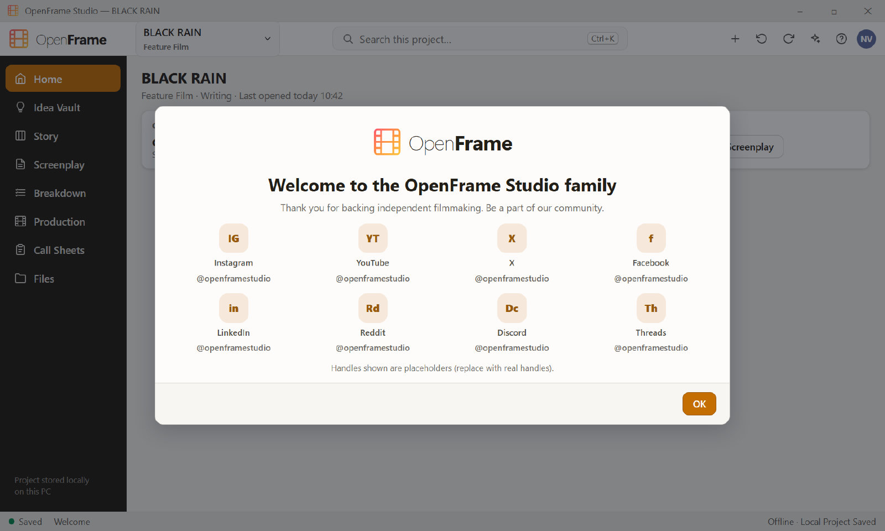

Scene 1EXT. OPEN SEA - NIGHT (1999)3 SHOTS | |||||||
|---|---|---|---|---|---|---|---|
| Done | Image | Shot | Description | Size | Movement | Angle | Lens |
 | 1A | Aerial plate: eleven boats in the swell, lanterns only Storyboard: Scene 1: title sequence over the storm #1 Sound: Wild wind and engines Camera: VFX storm extension. Plate shot at dusk, graded to night. | Extreme wide | Drone, slow push | High | 24mm | |
No image | 1B | Varghese at the wheel, radio handset in his fist Characters: VARGHESE Sound: Mariamma on radio, played back Camera: Rain bars on the wheelhouse. | Medium close-up | Handheld on the boat | Eye level | 40mm | |
No image | 1C | Insert: the set's dial as the signal breaks Sound: Static designed from Munambam recordings Camera: Practical dial light flicker. | Insert | Static | Overhead | 100mm macro | |
Scene 2INT. COAST RADIO STATION - OPERATIONS ROOM - NIGHT (1999)3 SHOTS | |||||||
|---|---|---|---|---|---|---|---|
| Done | Image | Shot | Description | Size | Movement | Angle | Lens |
No image | 2A | Master: Mariamma at two radios, Young Anjali under the desk Characters: MARIAMMA, YOUNG ANJALI Sound: Live radio chatter Camera: Child performer: this setup first. | Wide | Slow dolly left | Eye level | 32mm | |
No image | 2B | Joe in the doorway with the telegram Characters: JOE Camera: Backlit by the corridor bulb. | Medium | Static | Low | 50mm | |
No image | 2C | The lights die Characters: MARIAMMA, JOE Sound: Generator dies, hum drop Camera: Gaffer cue on 'Little Flower'. Candle practical ready. | Wide | Static | Eye level | 32mm | |